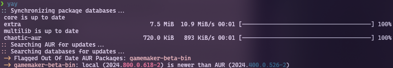

welcome to

my little own personal site
Home Page Blog ProjectsBack to Blog List
Running the Game Maker Studio 2 Linux Beta on Arch Linux
the latest linux beta of game maker is still only designed for ubuntu and for a while was super unstable on other linux distros to the point it was incredibly unusable.
a recent update to the beta made it way more stable on other distros, making it more worth it to set it up if u are interested in game maker development!
this blog post is here to help u set it up correctly on arch linux for a hopefully stable experience, its pretty straight forward to do and i hope this ends up helping people set it up! :3
needed dependencies
a good chunk of the needed dependencies for game maker should already be preinstalled onto ur system, however there are some that u might need to manually install urself, so here is a list of them!
clang
openal
unzip
zip
linuxdeploy-appimage (aur)
appimagetool-bin (aur)
installing steam runtimes
these are needed for building appimage packages, so run these two commands inside of a terminal to install it onto ur system!
$ sudo mkdir /opt/steam-runtime/$ curl https://repo.steampowered.com/steamrt-images-scout/snapshots/latest-steam-client-general-availability/com.valvesoftware.SteamRuntime.Sdk-amd64,i386-scout-sysroot.tar.gz | sudo tar -xzf - -C /opt/steam-runtime/
we will also need to manually copy some files from the steam-runtime folder into other locations, not doing this will cause compiler errors inside game maker!
to do this, just run the following commands!
$ cd /opt/steam-runtime$ sudo cp bin/sh bin/dash bin/cat bin/ls usr/bin/installing game maker
there is a game maker aur package we can use for this step, however it sadly does not get updated very often, so we will have to do some manual work to make it install the latest version of the game maker beta instead!
first, clone the aur package into a folder somewhere!
$ git clone https://aur.archlinux.org/gamemaker-beta-bin.git
open up the new folder and inside of it u will find a file called "PKGBUILD", we will need to edit this file, open it up in ur prefered file editor.
there are exactly two things here we will need to edit, the "pkgver" version id, and the first sha256 checksum in the "sha256sums" list.
we will need to download the latest game maker beta .deb file as a reference so we know what to replace these values with, go to https://gamemaker.io/en/download/ubuntu/beta/GameMaker.zip to download the latest version.
when downloaded, the file will be named something like "GameMaker-Beta-XXXX.XXX.X.XXX.deb", in my case the file is called "GameMaker-Beta-2024.800.0.618.deb", u need to copy the numbers from the file name and paste them into the "pkgver" field inside of the PKGBUILD file.
this should look something like this when done.
now we need to grab the files sha256 checksum, to do this just open up a terminal inside the folder where ur game maker .deb file is located. inside the terminal run the following command. (replaces the X's with the correct numbers)
$ sha256sum GameMaker-Beta-XXXX.XXX.X.XXX.debthis will give u a sha256 checksum of the file, similar to the one seen in the PKGBUILD file, copy that and go back to the PKGBUILD file.
in the PKGBUILD file, go to the part that says "sha256sums" that has 2 sha256 checksums listed, in this list u wanna replace the first checksum with the new one u got from the sha256sum command.
after this, we are done setting up the game maker installation!
from here, just open up a terminal inside of the gamemaker-beta-bin folder and run the following command.
$ makepkg -siafter this, game maker should be installed onto ur system and should be fully working!
OPTIONAL: muting the gamemaker package from things like yay
if u use an aur helper like yay there is a good chance u will now see gamemaker-beta-bin being flagged as "out of date" inside of ur terminal.
this itself is not an issue and can be ignored, however can get annoying over time.
fortunately, we can simply just mute the package so this does no longer appear!
open up the file "/etc/pacman.conf" in whatever editor u prefer.
in this file, there is a line called "IgnorePkg" that is most likely commented out for u if u have never used it before.
if that is the case, remove the "#" thats in front of the text and add "gamemaker-beta-bin" into the list just like the picture below.
once this is done, save the file and the warning should no longer appear!
everything should be done now and game maker should be fully usable! if u have any more questions, feel free to contact me through my fedi profile that is linked on my home page!
have fun using game maker!